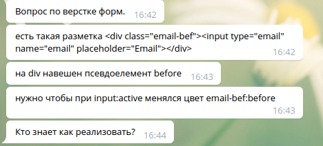

В одном из телеграмм-чатов по фронтенду сегодня возник вопрос по верстке форм:
У меня для таких случаев есть только один вариант решения, но ребята в чате дали еще несколько онтересных идей, которые мне захотелось попробовать.
Традиционный способ. Логика такая: в css прописываем родителю стили для двух состояний - обычного и активного. В js добавляем родителю класс в зависимости от фокуса на инпуте
Демо:Полностью удовлетворяет условию задачи, при необходимомти можно переписать на чистый js
Пытаемся вытащить псевдоэлемент через js, используя querySelector. Технически, псебдоэлементы не являются элементами DOM, поэтому ни достать их, ни изменить мне казалось невозможным. Однако, у объекта window есть метод getComputedStyle, который возвращает элемент со всеми стилями уже после того, как браузер отрисовал страницу (и в ней появились наши псевдоэлементы). Однако, это значит, что повлиять на него уже нельзя, так как теперь он нам доступен только для чтения
Загляните в консоль, чтобы увидеть псевдоэлемент и его свойства
Посмотреть фиддлЛогика такова: отловить фокус на поле ввода и в этот момент изменить рядом стоящий элемент.
Для использования такого подхода нужно изменить разметку, и поставить див c псевдоэлементом в разметке после инпута. Поменять их местами визуально можно с помошью свойств position или flexfox, и тогда нужно добавить еще один оберточный элемент
Пробуем псевдокласс :focus-within, который присваивается элементу, если он сам, или любой из его потомков получает состояние :focus
Свойство экспериментальное, поэтому работает только в 9% браузеров
CaniUse :focus-within